General¶
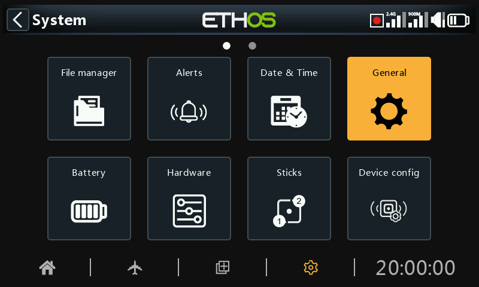
The following can be configured here:
- LCD display attributes
- The audio settings
- The vario settings
- The haptic feedback settings
- The top toolbar
Display attributes¶
The LCD display attributes can be configured here:
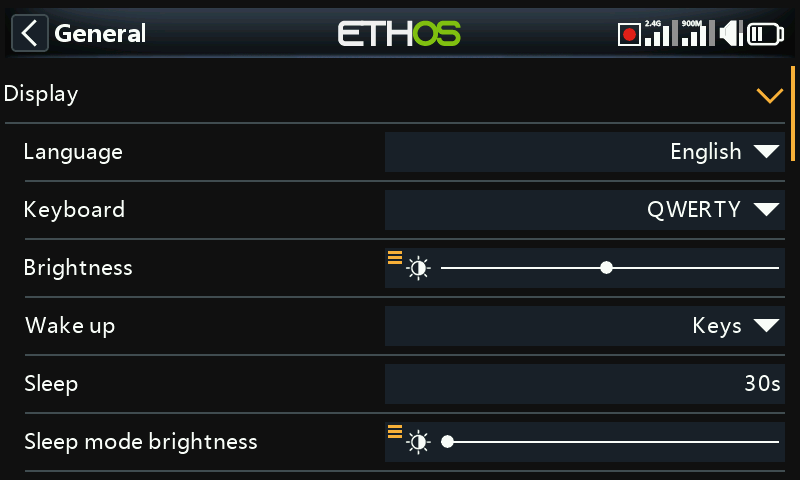
Language¶
The following languages are supported for the display menus:
English
中文
Česky
Deutsch
Español
Français
עִברִית
Italiano
Nederlands
Norsk
Português Brasileiro
Polish
Português
Keyboard¶
Allows selection between QWERTY, QWERTZ and AZERTY virtual keyboard layouts.
Brightness¶
Use the slider to control the screen brightness, from left to right to set brightness from dark to bright. Long press [ENT] brings up options to use a source, or set it to minimum or maximum.
Please note that if Brightness (for backlight ON) = ‘Sleep mode brightness’ (for backlight OFF) then the touchscreen stays active.
Pot/slider option¶
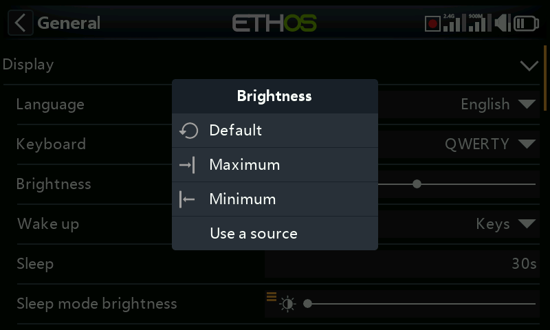
Tap on ‘Use a source’, then select a pot or slider to use as brightness control.
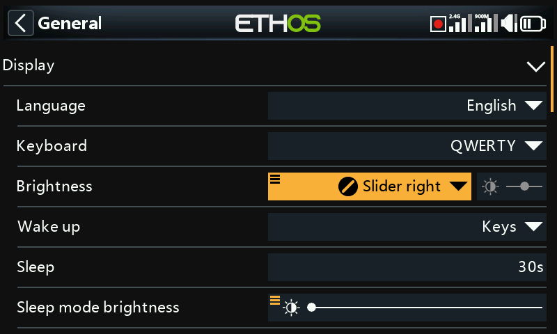
The above example shows brightness being controlled via the right slider.
Wake up¶
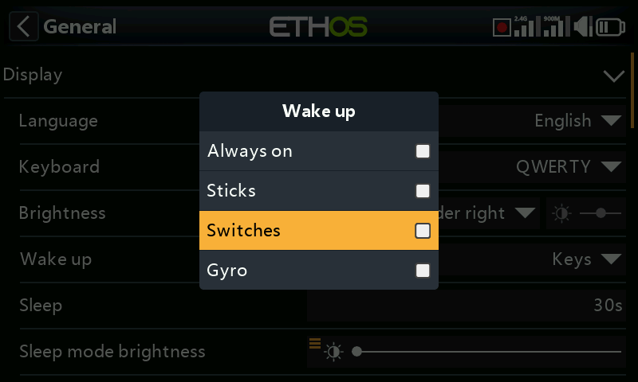
The screen backlight can be woken from the sleep state in accordance with one or more of the following options:
Always on¶
The backlight stays on permanently.
Sticks¶
The backlight turns on when sticks or keys are operated.
Switches¶
The backlight turns on when switches or keys are operated.
Gyro¶
The backlight turns on when you tilt the radio or when keys are operated.
Note that more than one option may be enabled.
Sleep¶
The length of inactivity before the backlight is turned off. When selecting ‘Always on’ as the display ‘Wake up’ option, the Sleep option is greyed out.
Sleep mode brightness¶
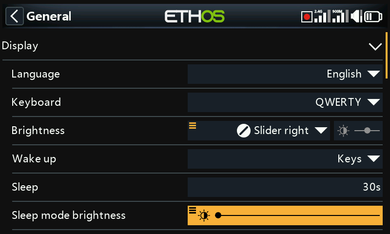
Use the slider to control the screen brightness during sleep mode, from left to right to set brightness from dark to bright.
Please note that if Brightness (for backlight ON) = ‘Sleep mode brightness’ (for backlight OFF) then the touchscreen stays active.
Theme¶
Allows selection between themes for the display. The default theme is Dark, with Light as an alternative. In addition, other Lua themes may be installed. Please refer to the ‘Alternative Lua display themes’ section for more details.
Highlight Color¶
Allows selection of the highlight color to be used in the display. The default is yellow (#F8B038).
Audio settings¶
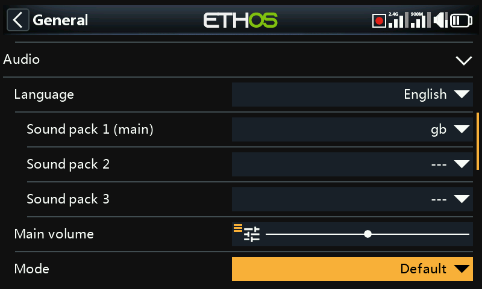
Audio language¶
Allows the language for voice announcements to be selected.
Choice of voices¶
The multi voice system feature provides the ability to select from different voice sets within a given language.
Voice 1 (main)¶
The main voice is used for all system announcements which are part of the Ethos operating system. By default, for English, there is a choice between an American (us) and an English (gb) voice. These packs only cover system announcements.
In the example above the English ‘gb’ voice has been selected as the ‘Voice 1 (main)’.
The files are located in these folders:
audio/en/us/system
audio/en/gb/system
User sound files¶
User sound files may be installed for use with the ‘Play audio’ special function (previously ‘Play track’ and ‘Play sequence’). Their location must be:
audio/en/us/ or
audio/en/gb/
Voice 2 and 3¶
Alternate voice packs may be installed as Voice 2 or 3.
To ensure the appropriate voice output for Voice 2 or 3 you will need to add your custom sound files to a folder structure similar to the standard ones shown above under Voice 1. For example, if you were using TTS and a voice called Susan, your folder structure would be:
audio/en/Susan for user sound files
audio/en/Susan/system for replacement system sound files
Please note that each voice must have a /system folder, containing the sound files needed for ‘Play value’ and timer announcements. Note that a list of the system sound files supplied as standard is included as a .csv file with each audio release.
You can then choose the voice to be used for each timer and ‘Play audio’ special function. Optionally, you could assign a custom voice as Voice 1 (main) if you wish to replace the system announcements with your own.
Voice ‘default’¶
To avoid conversion issues from 1.4.X, a default voice is also installed. During installation/upgrade, if the system audio Voice 1 (main voice) has not already been set, then ‘Voice 1 (main)’ will be set to ‘default’, as it is certain that the folder exists.
The files are located in this folder:
audio/en/default/system
User sound files¶
Some commonly requested custom sound files are provided for use with the ‘Play audio’ special function (previously ‘Play track’ and ‘Play sequence’). Their location is:
audio/en/default/
Additional custom user sound files may be added to this folder if the user wishes to continue using this default voice.
Main volume¶
Use the slider to control the audio volume. Long press [ENT] allows a pot to be used. Beeps during adjustment assist in judging the volume.
Audio mode¶
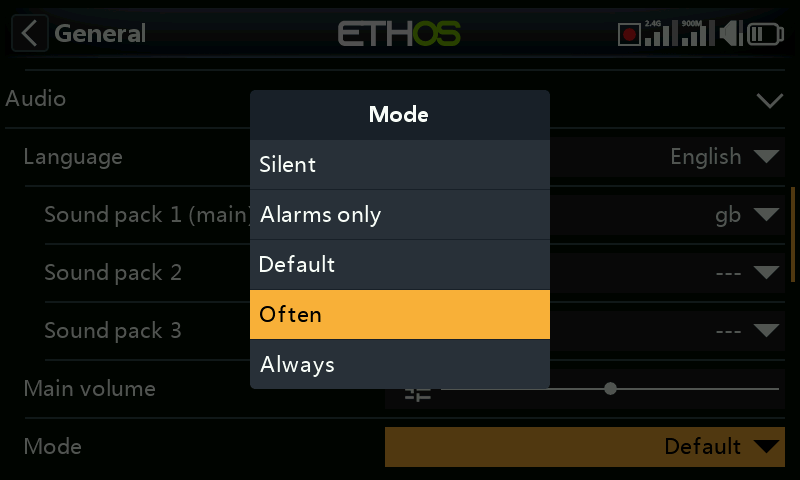
Silent¶
No audio. Note that there will be an alert given at startup if the ‘Silent mode’ check in System / Alerts is ON.
Alarms only¶
Only alarms will be output on audio.
Default¶
Sounds are enabled.
Often¶
There will additionally be error beeps when attempting to exceed the maximum or minimum value on editable numbers.
Always¶
In addition to the sounds in 'Often', there will also be beeps when the menu is navigated.
Bluetooth (X20S/HD/Pro/R/RS only)¶
The X20S, HD and X20 Pro/R/RS models have an additional audio mode for relaying the audio to a Bluetooth device like a headset.
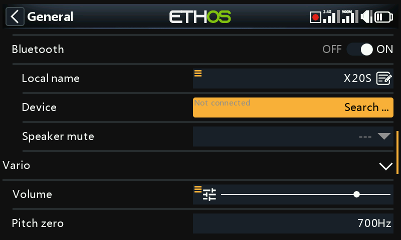
Touch 'Search Devices'.
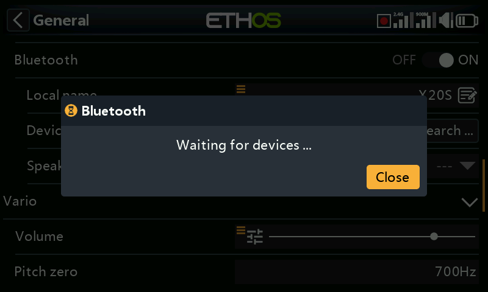
‘Waiting for devices’ displays. Turn on your Bluetooth device and place it into pairing mode.
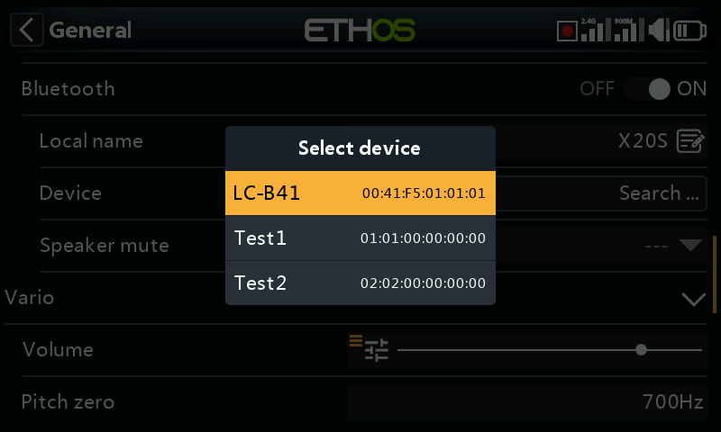
After the Bluetooth device is found, its name will be displayed. Touch it to select the device.
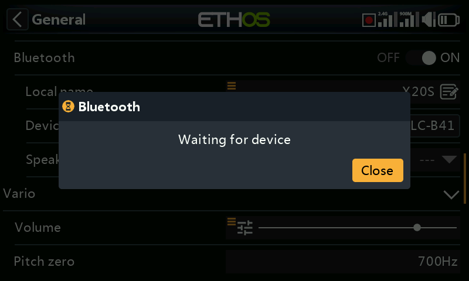
'Waiting for device' displays.
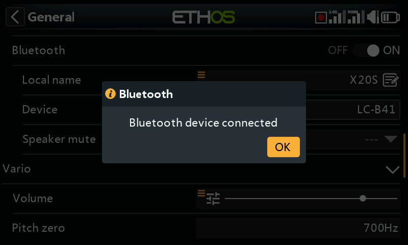
When the radio and device are paired, 'Bluetooth Device connected' displays. Touch OK.
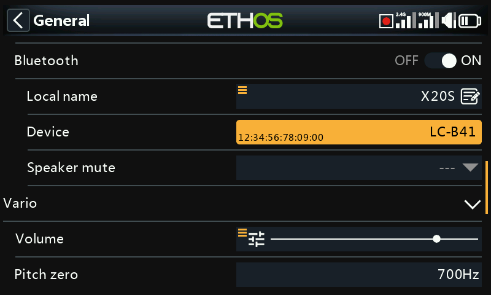
The Bluetooth screen will display again, showing the connection. The audio device should now be operating.
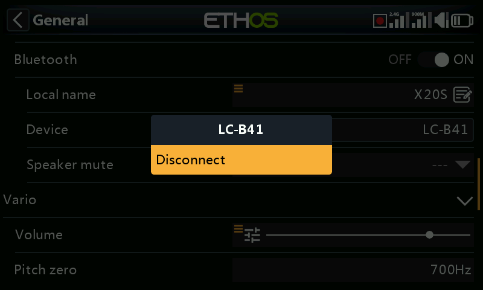
Disconnect¶
Tap on the Device to bring up a Disconnect option.
Speaker mute¶
To mute the system speaker (for example when using a BT earpiece), select from always on, or only on when telemetry is active, or controlled by a source such as a switch or any other condition.
The system remembers the Bluetooth device. For normal operation power on the radio and then the Bluetooth device. The Bluetooth device will connect, taking a few seconds for the speaker mute to activate again.
Vario¶
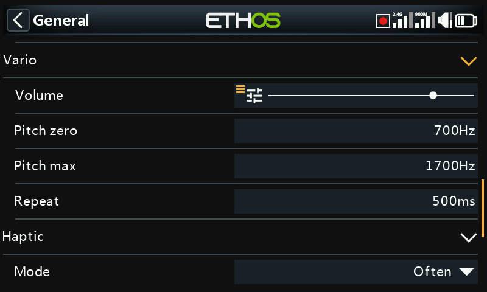
The audio characteristics of vario tones can be configured here.
Volume¶
The relative volume of the vario tone.
Pitch zero¶
The tone pitch when the climb rate is zero.
Pitch max¶
The tone pitch at maximum climb rate.
Repeat¶
The delay between beeps at pitch zero.
Please refer to the VSpeed sensor in Telemetry and the Play vario special function for other Vario parameters.
Haptic¶
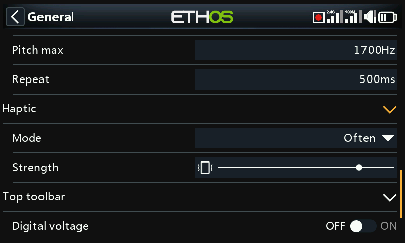
Strength¶
Use the slider to control the haptic vibration strength.
Mode¶
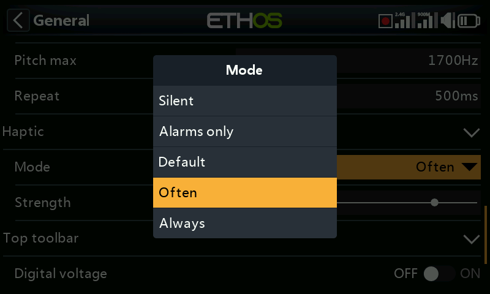
Similar to Audio mode above.
Storage location (X18 and X20 Pro/R/RS)¶
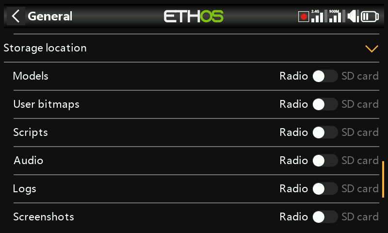
The X18 and X20 Pro/R/RS radios have an 8Gb eMMC (embedded MultiMediaCard) that is a storage device made up of NAND flash memory and a simple storage controller. The ETHOS system default selects the eMMC storage making the SD card use optional. However, the user may select the use of the eMMC storage or use an optional SD card or a combination of both.
Please refer to the storage location selection screen above. If the system and models are moved to the SD card those folders and files need to be copied to the SD card before making the selection. The same applies to the audio and bitmaps.
Top toolbar¶
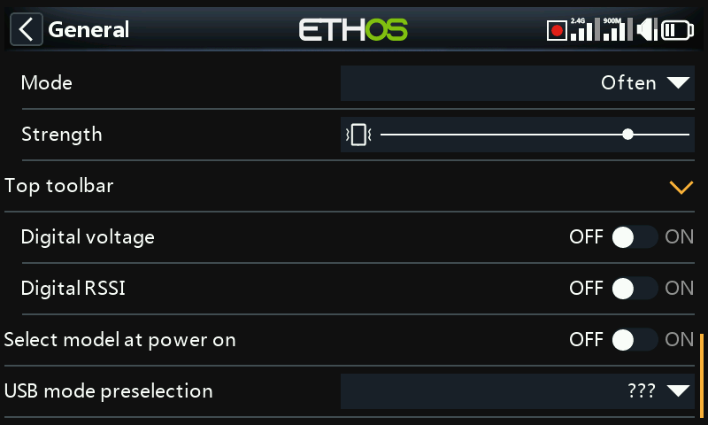
Digital voltage¶
The battery status in the top toolbar may be changed from the default bar display to display the radio battery voltage as a digital value instead.
Digital RSSI¶
Similarly, the RSSI status may be changed from a bar display to a digital value for both 2.4G and 900M.
Select model at power on¶
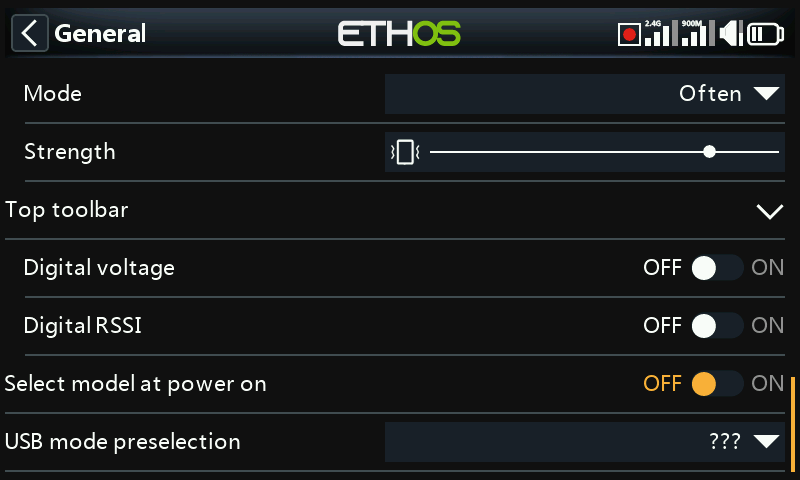
When this option is enabled, the model selection screen will come up at power on, so that a model may be chosen before the checklist alerts from the previously selected model come up. This avoids having to cancel out of the checklist alerts before selecting a different model.
By default the last model used in the previous session is highlighted for selection.
USB mode preselection¶
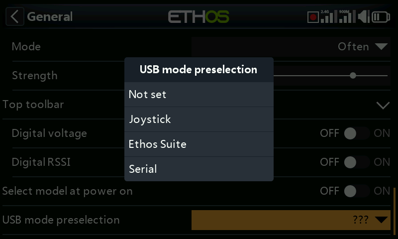
The following preselections are available for when the radio is connected to a PC via USB cable:
Not set¶
If ‘Not set’, a dialog will pop up at connect time for a selection to be made then.
Joystick¶
At connection, the radio will automatically enter joystick mode for use with an RC simulator.
Ethos Suite¶
At connection, the radio will automatically enter ‘Ethos mode’ for communication with Ethos Suite. Please refer to Ethos Mode in the Ethos Suite section.
Serial¶
At connection, the radio will automatically enter Serial mode, in which Lua debug traces are sent to USB-Serial if present. The baud rate is 115200bps. A suitable Windows virtual COM port driver may be found here.